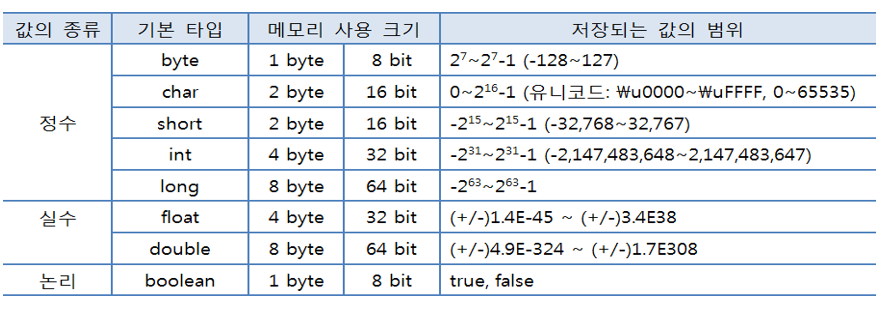

변수와 타입
기본 타입
1 byte = 8 bit
[00000000]
값의종류 기본타입 메모리 사용 크기 저장되는 값의 범위
byte 1 byte 8bit -2^7 ~ 2^7-1
char 2 byte 16bit 0 ~ 2^16-1 (음수가 필요없는 문자열이라 16칸 모두 사용할수있어서)
정수 short 2 byte 16bit -2^15 ~ 2^15-1
int 4 byte 32bit -2^31 ~ 2^31-1 (약 21억)
long 8 byte 64bit -2^63 ~ 2^63-1
실수 float 4 byte 32bit (+/-)1.4E-45 ~ (+/-)3.4E38
double 8 byte 64bit (+/-)4.9E-324 ~ (+/-)1.7E308
논리 boolean 1 byte 8bit tre,false 참거짓
(불리언)
자바의 기본타입은 8개 하지만 char은 문자라 기본타입을 7개라고 할수있다.
실수 타입
float
[0,7bit지수부][8bit][8bit][8bit] 뒤에 3byte는 소수부(가수부) 하지만 가수부에서 지수부하나를 더한다 따라서
부호(1bit) + 지수(8bit) + 가수 (23bit) = 32bit = 4byte
ex)
100.625 = 64.A(16) -> 0.64A * 16^2 ->[42].[64][A0][00]
64바이어스법
부동 소수점 표현 방식에서 지수 부분의 7 Bit에 100 0000(10진수 64)이 기본적으로 입력되어 있고 이것은 16^0임을 나타낸다.
지수를 표현하려면 64에 표현하려는 지수를 더해서 표현하기 때문에 64 바이어스법이라고 한다.
64 * 16^0 = 64
64 * 16^1 = 65
64 * 16^2 = 66
64 * 16^-1= 63
64 * 16^-2= 62
따라서 16^2 = 66 = 42(16)
doble
실수의 기본
부호(1bit) + 지수(11bit) + 가수(52bit) = 64bit = 8byte
